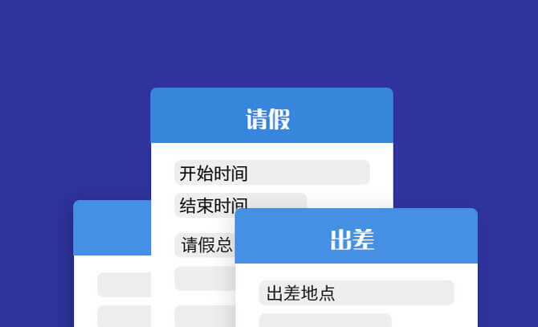

美办1.0.2版本新功能介绍
-
1、移动端快速发起审批
请假，报销，出差，轻松在手机端提交申请，免去繁琐流程，更高效，更环保。
-
2、待审批列表，快速处理，事半功倍

待审批列表，将所有申请都规范统一展示，可极大提高审批人的工作效率，快速处理各种申请，出差也没顾虑了。
-
3、多种审批表单供您选择
我们为您提供多种场景的申请需求。请假，出差，外出，报销，用印，物料申请，补打卡说明等等。如果没有合适您的表单，下期版本我们会更新自定义审批功能，敬请期待。
-
4、审批进度一目了然

每个审批记录的详情页面，都展示了这个审批的当前进度和所有流程。我们可以看到审批人的审批状态，甚至还可以进入审批人人的详情页面，和他聊天，沟通审批细节。